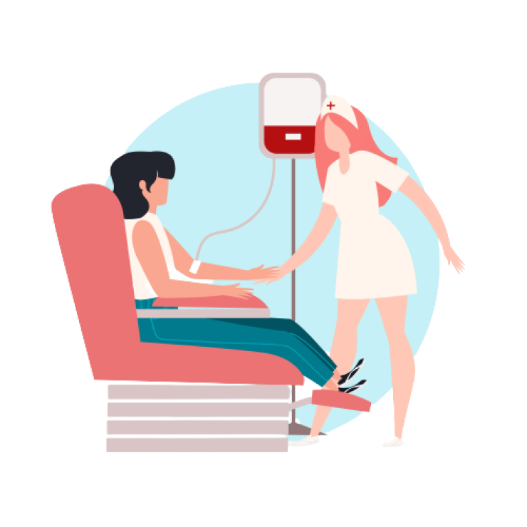

O monitoramento da temperatura é de extrema importância, pois temperaturas inadequadas podem levar à
coagulação do sangue, o inutilizando.
Isso pode afetar a eficácia da transfusão e prejudicar o paciente que está recebendo o sangue
doado.
Portanto, é fundamental que os profissionais de saúde responsáveis pelo armazenamento e transporte
das
bolsas de sangue, monitorem constantemente a temperatura para garantir a sua segurança e eficácia no
tratamento dos pacientes.
O custo para se captar um paciente(como campanha, marketing) corresponde, em média, a R$ 32,74. O de triagem R$ 83,35 e o da coleta, RS$ 299,03.
A bolsa de sangue tem um custo total R$ 585,81.
Após analisarmos a importância da doação e o prejuizo que ocorre na perda(tanto na parte financeira, como o impacto na vida das pessoas que necessitam) decidimos criar um sistema onde monitoramos os bancos de sangue 24 horas por dia! Deixando o sangue totalmente seguro de qualquer instabilidade climática.